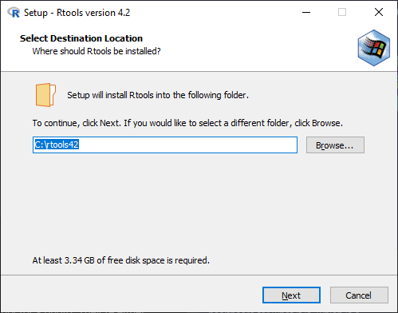

sensR on the latest RThis guide assumes you are using Windows.
Rstudio and type in the console version. For example:> version
_
platform x86_64-w64-mingw32
arch x86_64
os mingw32
crt ucrt
system x86_64, mingw32
status
major 4
minor 2.1
year 2022
month 06
day 23
svn rev 82513
language R
version.string R version 4.2.1 (2022-06-23 ucrt)
nickname Funny-Looking Kid
4.2.1 (as of
22/07/2022, this is the latest version of R). If your version of R is not >=4.2.0.
Follow this
guide (as it helps you make sure you save your packages alongside your update) to update to the latest
version of R.R>=4.2.0 head to the Rtools42 site and
download the Rtools42 installer. For the latest version as of 22/07/2022, you can click this
download link..exe file (e.g. rtools42-5253-5107-signed.exe) and
double-click it to run. A window should appear asking for administrative privileges, click yes.
sensR and all its dependencies (Note: these commands
are in order, running these out of order will not work and the install will
fail)
# sandwich dependencies
install.packages("https://mran.microsoft.com/snapshot/2019-05-24/src/contrib/zoo_1.8-5.tar.gz", repos=NULL, method="libcurl")
# multcomp dependencies
install.packages("https://mran.microsoft.com/snapshot/2019-05-24/src/contrib/mvtnorm_1.0-10.tar.gz", repos=NULL, method="libcurl")
install.packages("https://mran.microsoft.com/snapshot/2019-05-24/src/contrib/TH.data_1.0-10.tar.gz", repos=NULL, method="libcurl")
install.packages("https://mran.microsoft.com/snapshot/2019-05-24/src/contrib/sandwich_2.5-1.tar.gz", repos=NULL, method="libcurl")
# sensR dependencies
install.packages("https://mran.microsoft.com/snapshot/2019-05-24/src/contrib/multcomp_1.4-10.tar.gz", repos=NULL, method="libcurl")
install.packages("https://mran.microsoft.com/snapshot/2019-05-24/src/contrib/numDeriv_2016.8-1.tar.gz", repos=NULL, method="libcurl")
# sensR itself
install.packages("https://mran.microsoft.com/snapshot/2019-05-24/src/contrib/sensR_1.5-1.tar.gz", repos=NULL, method="libcurl")
This could take some time depending on the speed of your system
Or in a cleaner way:
base_url <- "https://mran.microsoft.com/snapshot/2019-05-24/src/contrib/"
files <- list("zoo_1.8-5.tar.gz", "mvtnorm_1.0-10.tar.gz", "TH.data_1.0-10.tar.gz", "sandwich_2.5-1.tar.gz", "multcomp_1.4-10.tar.gz", "numDeriv_2016.8-1.tar.gz", "sensR_1.5-1.tar.gz")
for (name in files) install.packages(paste(base_url, name, sep=""), repos=NULL, method="libcurl")
sensR package with:library(sensR)
AnotA(10, 20, 3, 20)
(m1 <- AnotA(10, 20, 3, 20))
## plot distributions of sensory intensity:
plot(m1)
Plots tab: